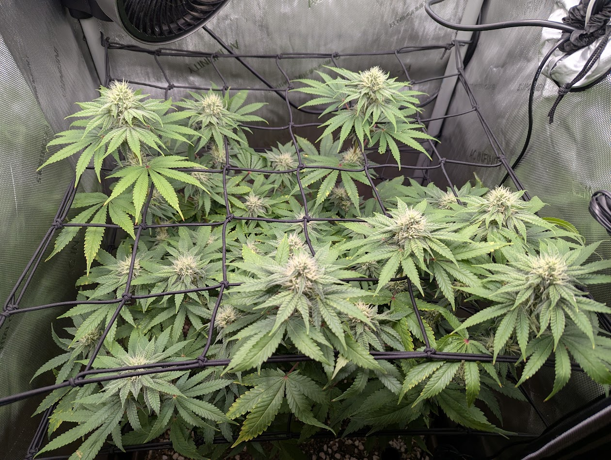
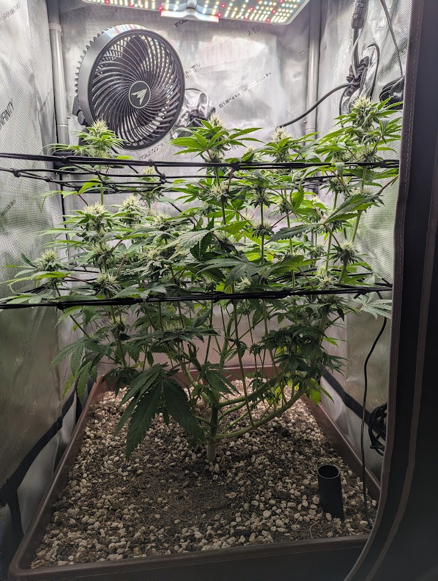
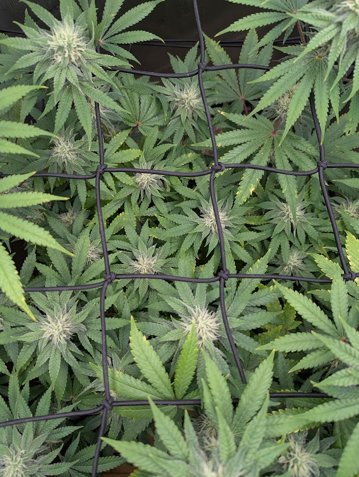
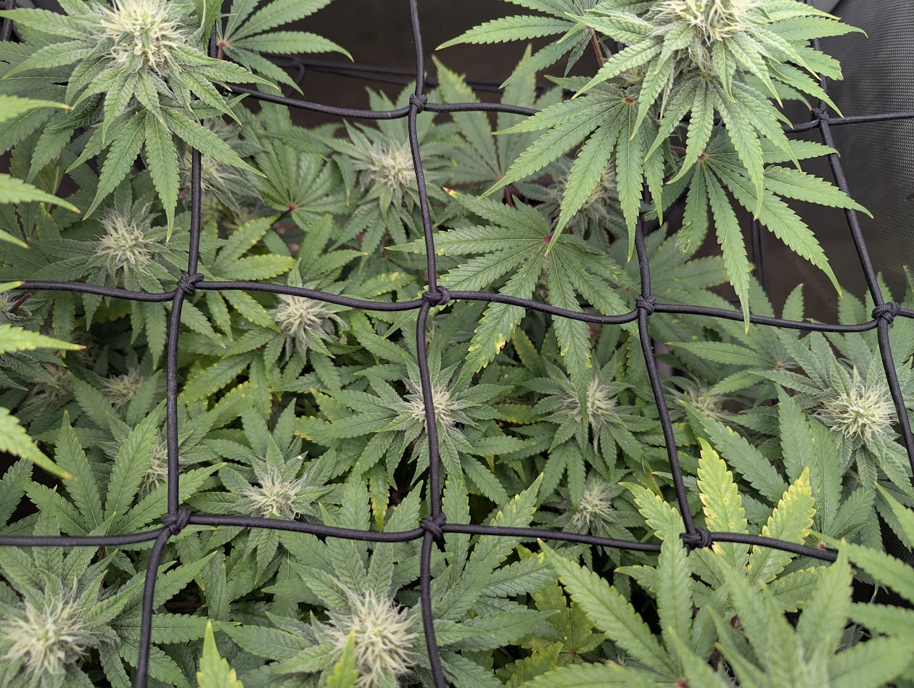
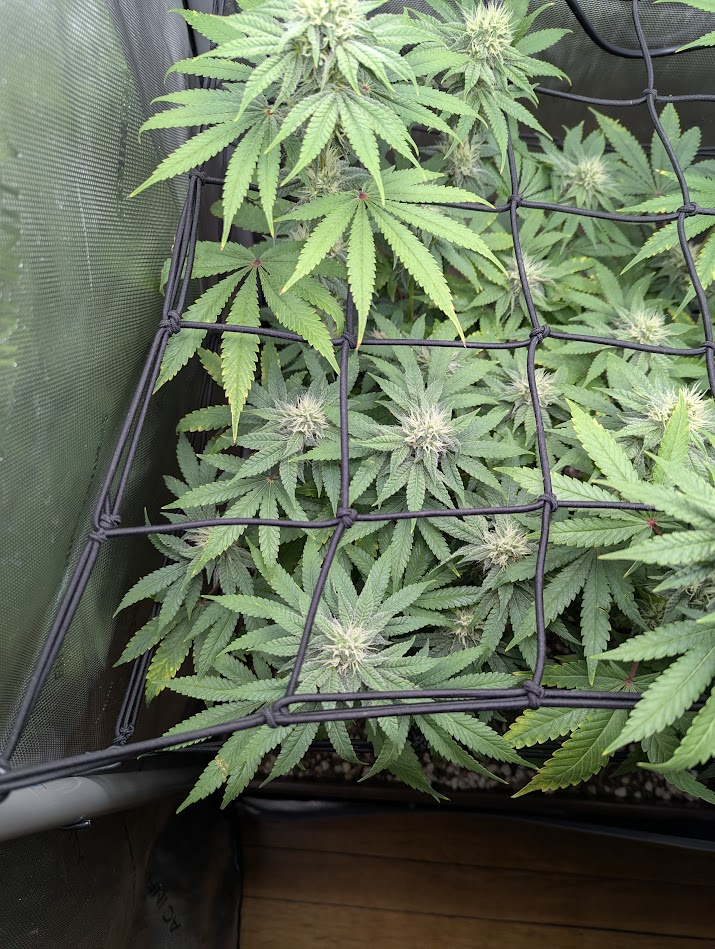
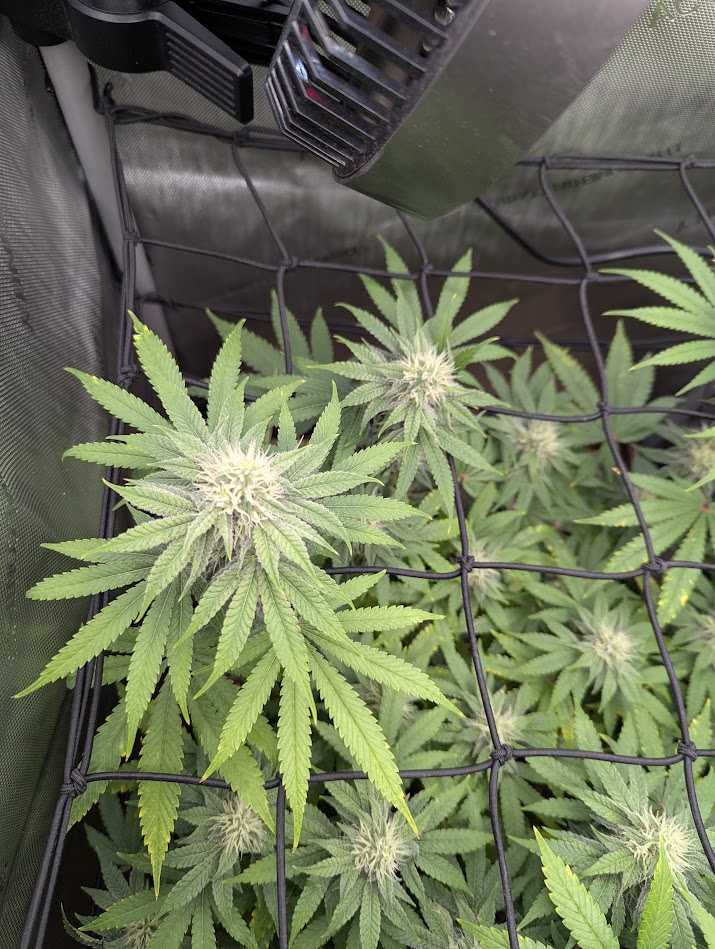
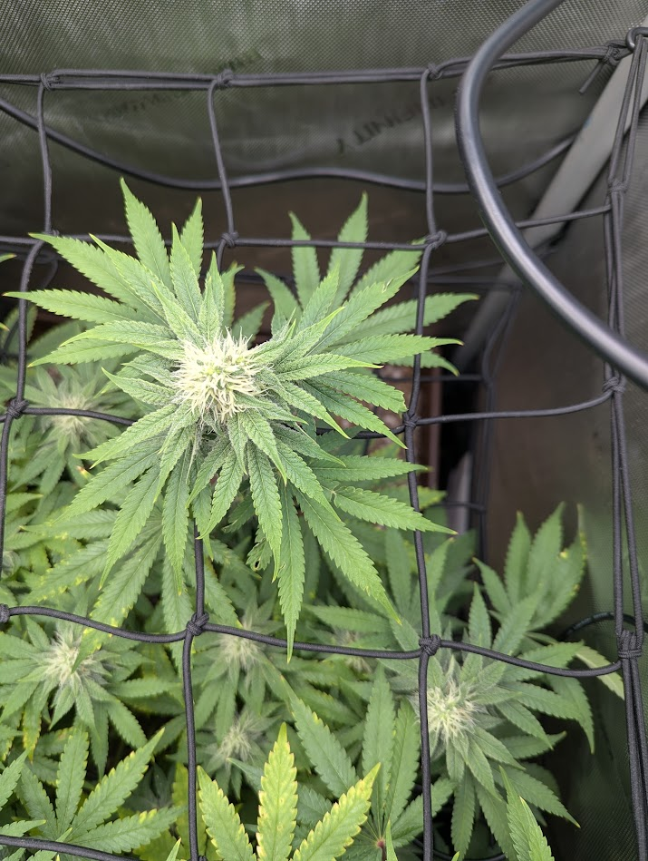
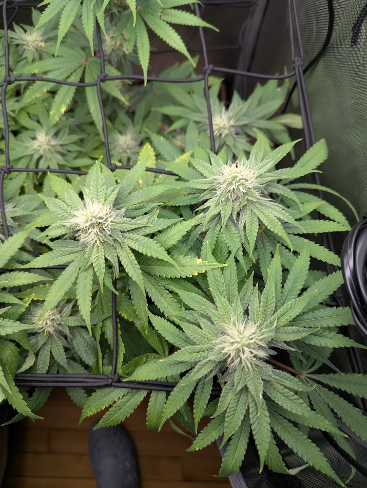
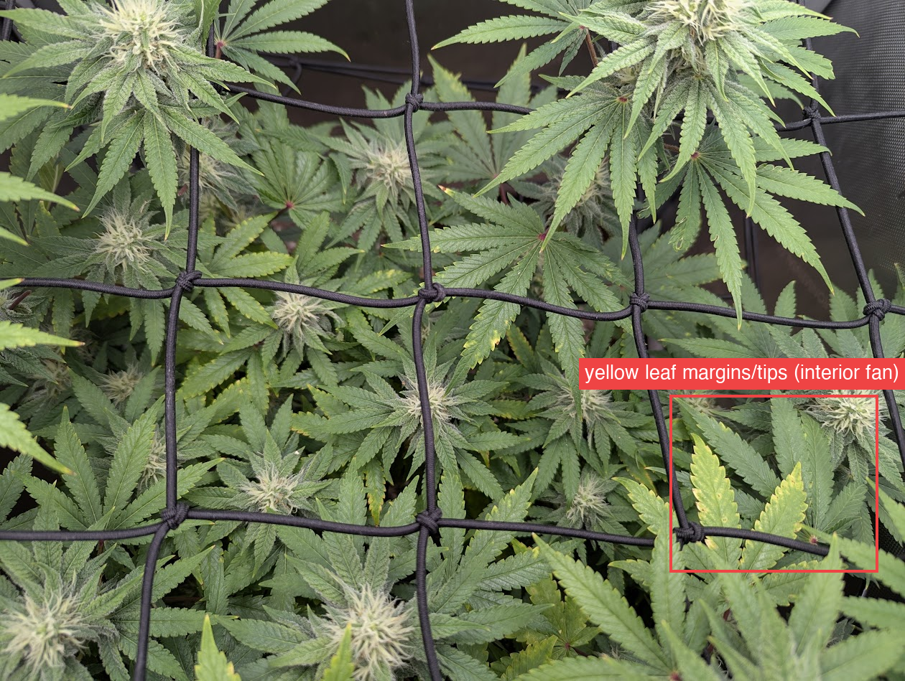

Five days on from 7/1, the plant is clearly ahead — the canopy has filled in from a netted plane with visible gaps into a near-solid layer of fattening, frosty tops, and pistil clusters are denser and swelling. Color is deep green through the actively growing tops and new growth is clean. The one live item is the interior-fan yellowing from 7/1, and — being straight with you — it has progressed: on 7/1 the center shot showed only a few faint yellow tips, and on 7/6 several mid-canopy fan leaves show clear yellow tips/margins, with one margin-yellowed leaf in the close-up. The reassuring part is where it sits: the affected leaves are the older fans at the net plane (now shaded by the colas that grew above them), while the cola tips and newest growth stay deep green — so it is spreading in amount, not yet in altitude into the growing tips. At day ~33 that's on the normal side of mid-flower fade, but the rate is worth a real watch (see the yellowing flag for the 7/2-tea question). No pests, powdery mildew, mold, or bleaching in any of the eight shots. Soil surface is drying — you're due for a water.
TLDR — A manual close-up check-in comparing this 7/6 set region-by-region to the 7/1 manual report, and a call on OK / improving / declining. Eight photos this time: overall canopy, side, the four quadrants, center, and an extra up-close of the canopy center. Report generated for review before commit/push.




This is an estimate, not a precise count — slightly up from 7/1's ~25–35 as the canopy filled in and more tops crossed the "distinct frosty top" threshold. Method: counting distinct white-pistil flowering tops in the top-down canopy (img 1) and center (img 7–8), using the scrog squares as a reference. Overlap and occlusion make an exact number unreliable from a photo, so treat the trend as the signal, not the absolute figure. For a true count, tally physically at a defoliation or count occupied scrog squares. (See manual_report_format.md.)
| Signal | 7/1 (day ~28) | 7/6 (day ~33) | Trend |
|---|---|---|---|
| Pistils / bud swell | Denser pistils, tops fattening | Noticeably fatter, frostier tops; pistil clusters swelling | ↑ better |
| Canopy fill | Tops above the net, dark gaps + soil visible mid-canopy | Near-solid canopy; gaps filled, buds occupying the squares | ↑ better |
| Leaf color (tops) | Uniform deep green up top | Still deep green through tops + new growth | → steady |
| Leaf color (interior) | A few faint yellow tips on interior fans | Yellow tips/margins on several mid-canopy fans — clearly more than 7/1; still on older/shaded leaves, not the tops | ↑ progressing (watch) |
| Posture / turgor | Turgid, no droop | Same — turgid, flat, no wilt | → steady |
| Pests / mold / PM | Clean | Clean in all 8 shots (checked for powdery mildew too) | → clear |
| Watering | — | Soil surface drying; 4 days since the 7/2 tea/top-dress | → due |




Every region reads healthy: deep green through the tops, fattening pistil-dense colas, turgid flat leaves, and no webbing, stippling, powder, or gray fluff in any close-up. The canopy is visibly fuller and the buds bigger than 7/1. The only recurring note is interior-fan yellowing (tips/margins), addressed below.

Is it "creeping up"? In amount, yes; in altitude, not yet. The yellowing leaves are the large older fans sitting at/just below the net plane — leaves that were the canopy top a couple weeks ago and are now shaded by the colas that stacked above them. The cola tips and the newest lime-green shoots stay green. Because those fans sit right at the surface, it reads as "climbing," but the actively-growing points aren't yellowing. That altitude distinction is the whole call: old-leaf fade from the bottom/interior = expected; yellowing that reaches the new growth at the tops = a real draw to act on (KB 0202 · Nutrient Deficiencies & ToxicitiesAlways run the framework first (pH/watering, then location). Fixes below assume a synthetic/bottled-nutrient grow; for living soil, see 07 (the remedy is amendments/teas, not a bottle).Covers: Mobility cheat sheet · Mobile nutrients · Immobile nutrients · Toxicities & overfeeding · Hard ruleGrowBuddy knowledge base · 02-deficiencies.md, mobile-nutrient localization).
On the 7/2 compost tea — good question, and it cuts both ways. A vermicompost tea is mostly a microbial/biological boost with only mild nutrients, and the flowering top-dress amendments release slowly (broken down by soil life over days-to-weeks, not hours) — so 4 days is too soon for that feed to have reversed a real shortfall, and its presence doesn't rule a deficiency in or out. The more important point: in normal mid-flower fade the plant pulls mobile nutrients out of old fan leaves into the buds regardless of how rich the soil is — a well-fed plant still fades its lowers. So the recent feed is mildly reassuring that the soil isn't starved, but it doesn't settle it; the trajectory and altitude do. It also means chasing this with heavy nitrogen now would be the wrong move — you don't want to push vegetative growth in week 5 of flower (KB 0707 · Organic / Living Soil / No-TillA living-soil grow is a different system from bottled-nutrient growing, and most generic diagnosis advice gives the wrong fix here. If the grow is living soil / no-till, read this before recommending anything.Covers: The core idea · How feeding/correcting works (and what NOT to say) · Diagnosis differences in living soil · Practical no-till setup & routine (real-world basics) · Practical rule for the diagnoserGrowBuddy knowledge base · 07-organic-living-soil.md).
What to actually do: pull one of the yellowing lower fans and read the pattern up close — uniform pale = nitrogen (benign fade), yellow between green veins = magnesium, scorched margins/tips = potassium. That, plus whether it reaches the new growth over the next week, tells you whether it's fade (do nothing) or a draw worth a stronger tea/top-dress. Not asserting a specific cause from a photo — see Assumptions.
Sources: knowledge_base framework (01), deficiencies (02), pests (04), diseases (05), organic/living-soil (07), and the Papaya Crush strain file. Comparison baseline: manual-report 2026-07-01.
On track and improving. At day ~33 this is a healthy, pest-free Papaya Crush moving through mid-flower, clearly ahead of the 7/1 baseline with a fuller canopy, fatter frostier tops, and denser pistils. The one live item needs an honest watch: the interior-fan yellowing has genuinely progressed since 7/1, though it's still on the older/shaded fans with green tops, which keeps it on the fade side of the line for now. Read a lower leaf up close and track whether it reaches the new growth. Give it a water — it's due.